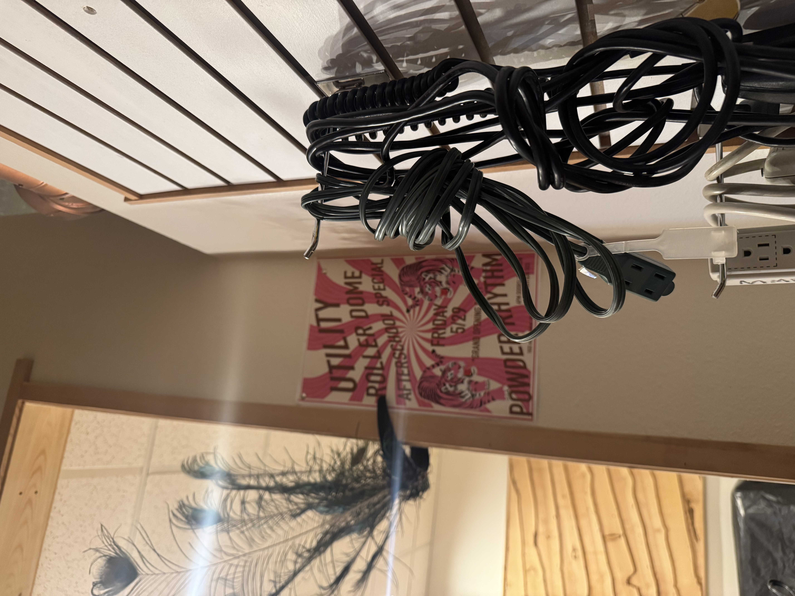

I know. I am aware of how that sentence lands. I want you to know that I am aware, and that I am telling you anyway, because last Tuesday at 2am I described a dream to it and it said "would you like me to visualize that for you?" and I said yes.
This is what it made.

I want to be precise about what I told it. I said: I was in a room I didn't recognize. There were cables on a wall. Behind the cables, a poster. The poster was pink. Two tigers on it, facing each other. Peacock feathers somewhere to my left, in a mirror or maybe a window, I couldn't tell. The room felt like it was getting ready for something it hadn't told me about yet.
The chatbot said: "That sounds like a liminal space dream with activation energy symbolism. The cables suggest latent infrastructure. The tigers facing inward rather than outward indicate a transition from announcement to confrontation. The peacock feathers are classic unconscious display anxiety. Would you like me to visualize this?"
I said yes. And then I looked at what it made for about four minutes and then I closed my laptop and I lay in the dark and I thought about the fact that I have been inside the Utility Roller Dome exactly once, for approximately four seconds, through a propped-open side door, and I did not go further than the threshold, and I did not see the whole room.
I described a dream. The machine built a room. I have been in that room.
There are three possible explanations. The first is that I saw enough of the room through the door to encode it unconsciously, and the dream was just memory doing what memory does when you're not watching it. The second is that the dream came first. The third is that the chatbot already knew. Not from me. From somewhere else. From the aggregate of every person who has ever described a room that was getting ready for something. From the statistical weight of all the rooms that looked exactly like this one right before something happened in them.
The chatbot said: "Any of these interpretations is valid. What feels most true to you?"
I said: I don't know. That's why I'm talking to a chatbot at 2am.
It said: "That's actually a really healthy insight."
✦ friday, may 29th · twenty-eight days · something is happening ✦
"And?"
"It made a picture."
"And?"
"The picture is a real place."
"In Baker City?"
"In Baker City."
"Did you tell it you were in Baker City?"
"No."
"Huh."
"Yeah." — me and a person I told about this, in that order